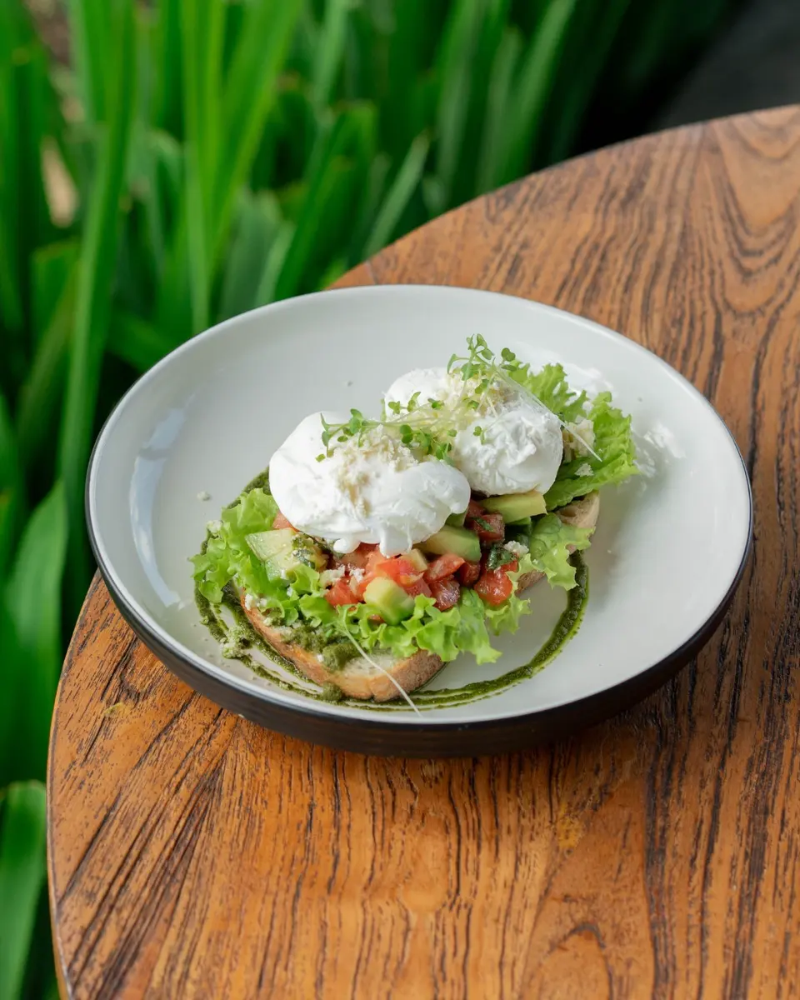

Before 3pm, every day
Breakfast Specials
59K
Eight breakfasts at one price until 3pm: Combo Pukako, Healing Bowl, Avocado Ham Toast, Fluffy Pancake, French Toast and more.
“l would especially recommend the healing bowl.”Polina Brown, Google review